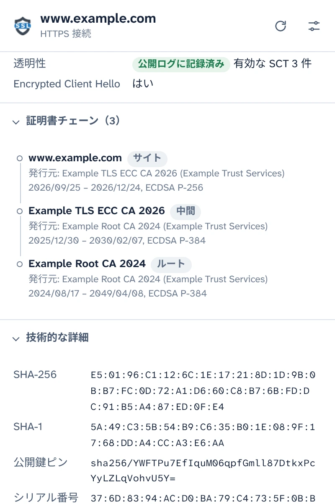
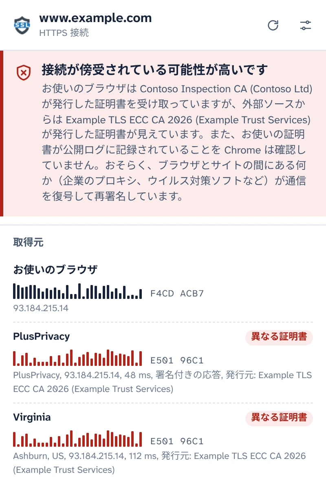
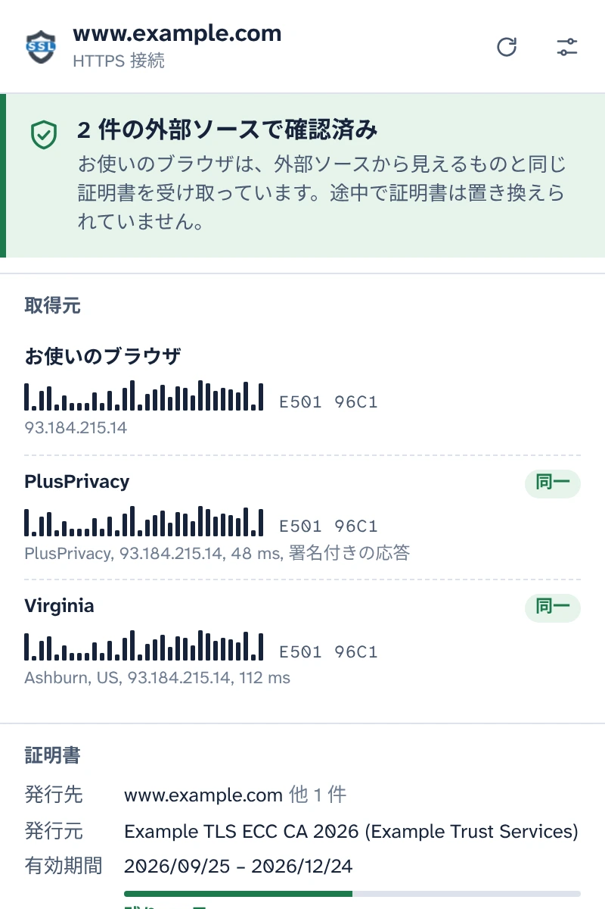
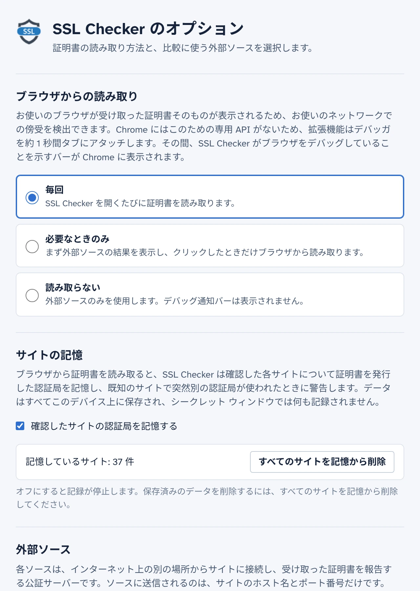

ブラウザが実際に受け取った証明書を確認
SSL Checker は、タブで開いているサイトの証明書を Chrome から直接読み取り、インターネット上の別の場所から独立した公証サーバーが見ている証明書と比較します。両者が異なる場合は、ブラウザとサイトの間にある何かが証明書を置き換えています。
無料のオープンソース。アカウント不要、アナリティクスなし。
2 件の外部ソースで確認済み接続が傍受されている可能性が高いです
お使いのブラウザは、外部ソースから見えるものと同じ証明書を受け取っています。途中で証明書は置き換えられていません。お使いのブラウザは Contoso Inspection CA が発行した証明書を受け取っていますが、外部ソースからは Example TLS ECC CA 2026 が発行した証明書が見えています。
- お使いのブラウザ E501 96C1F4CD ACB7
- PlusPrivacy 同一異なる証明書 E501 96C1
- Virginia 同一異なる証明書 E501 96C1
接続の詳細をすべて表示
このタブで Chrome が受け取った内容を、サーバーから改めて取得するのではなく、ブラウザ自体から読み取ります。
- 対象となる名前、発行元、有効期間と残り日数、認証レベル（DV、OV、EV）
- TLS バージョン、鍵交換（ポスト量子ハイブリッド方式を含む）、暗号方式、Encrypted Client Hello
- Certificate Transparency のステータスと署名付き証明書タイムスタンプ（SCT）
- 完全な証明書チェーン、フィンガープリント、すべての拡張領域。PEM のコピーやチェーンのダウンロードもできます。

HTTPS の傍受を見破る
企業のプロキシ、ウイルス対策ソフトの HTTPS スキャン、公衆 Wi-Fi 上の攻撃者は、いずれも同じ仕組みで動作します。通信を復号し、独自の証明書をブラウザに渡すのです。ページは普段どおりに表示され、鍵アイコンもそのまま表示されます。
SSL Checker は、PlusPrivacy 公証サーバーと追加したすべての公証サーバーに、同じサイトがどの証明書を提示しているかを問い合わせます。公証サーバーは、お使いのネットワーク上にあるものを経由せずに、インターネット上の別の場所から接続します。そのうえで、フィンガープリントを比較します:
- どこでも同じ証明書: 確認済み。
- お使いの証明書が異なり、公開ログに記録されていない: 傍受されている可能性が高い状態です。SSL Checker は置き換え用の証明書を発行した認証局の名前を表示し、既知のインスペクション製品を識別します。
- ソース同士の結果が一致しない: その旨を、それぞれの場合に考えられる意味とともに報告します。

途中で誰も偽造できない応答
通信を傍受しているものが、公証サーバーになりすまして応答しようとすることも考えられます。しかし、それは通用しません。PlusPrivacy 公証サーバーはすべての応答に Ed25519 で署名し、SSL Checker はその署名に加えて、問い合わせごとに送る乱数と、問い合わせたサイトを検証します。偽造・リプレイ・転用された応答は拒否され、何かが応答を書き換えたことがポップアップに表示されます。
独自の公証サーバーを運用
公証サーバーはオープンソースです。Docker 用の小さな Node.js サービスで、大量のリクエストやプライベート ネットワークへのリクエストから保護されています。任意のサーバーにインストールし、オプション ページでアドレスと鍵を追加すれば、その応答も同じ方法で検証されます。

デバッガを実行するタイミングを選べます
Chrome には、読み込まれたページの証明書を取得する拡張機能用の API がありません。そのため SSL Checker は、証明書を読み取る約 1 秒間、Chrome のデバッガをタブにアタッチします。その間、Chrome にはデバッグ通知バーが表示されます。これをいつ行うかは、オプション ページで選べます:
- 毎回: ポップアップを開くたびに読み取ります
- 必要なときのみ: ポップアップでクリックしたときに読み取ります
- 読み取らない: 公証サーバーにのみ問い合わせます
確認したサイトを記憶
SSL Checker は各サイトが使用している認証局を記憶し、既知のサイトで突然別の認証局が使われたとき（新しい Wi-Fi ネットワークに接続したときなど）に警告します。この記憶はお使いのデバイス上にとどまり、シークレット ウィンドウでは使用されず、オプション ページでオフにしたり消去したりできます。

プライバシーを重視した設計
- ポップアップで同意するまで、何も読み取らず、何も送信しません。
- お使いのデバイスから送信されるのは、サイトのホスト名とポート番号だけです。これらは、使用している公証サーバーへの HTTPS リクエストの本文で送信されます。
- PlusPrivacy 公証サーバーは、確認されたサイトの記録を残しません。この公証サーバーをオフにしたり、ご自身で運用する公証サーバーにのみ問い合わせたりすることもできます。
- アナリティクスなし、トラッキングなし、アカウント不要。サイトの記憶がお使いのデバイスの外に出ることはありません。
- このウェブサイトにもアナリティクスはなく、他のサーバーからは何も読み込みません。
POST /v1/cert
Content-Type: application/json
{
"host": "www.example.com",
"port": 443,
"nonce": "Xq3MpTb0vR9kLs2eWn5yZA"
}